Lesson 29 – Demodulation#
Learning Outcomes#
Compute transmitter power efficiency for an AM system with a given modulation index.
Understand block diagram AM demodulators and their limitations.
Analyze envelope detectors in the time domain and synchronous detectors in the frequency domain.
Given an AM modulated signal design an AM demodulator to recover the original message.
Understand the engineering trade-offs between over- and under-modulated AM communications scenarios
Demodulation#
The last several lessons have been spent learning about how to modulate signals to prepare them for transmission. This lesson focuses on demodulating the signals to recover the original information. We will also look at the different trade-offs that are made when choosing how to modulate and demodulate a signal.
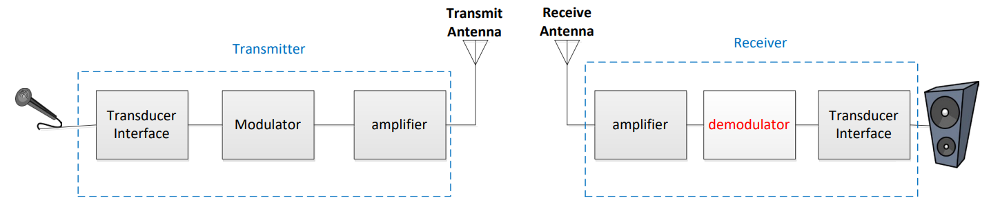
Modulation Efficiency#
Previously, we introduced the concept of adding a bias signal to our message before sending the message through a function multiplier. We compared the waveforms and spectra for three different modulation indexes (using the same message and biases of 0V, 4V, and 6V, respectively, assuming that Ac = 1V), as shown below. You can see as we add more bias to our message, the envelopes of the time-domain waveform draw apart until they are completely separated for modulation indexes less than 1. At the same time, a frequency component appears in the spectrum at the carrier frequency that grows larger as we increase the amount of bias added. The signals on the far left and far right are examples of two classes of amplitude modulation:
Double sideband, suppressed carrier (DSB-SC): Information is carried in sidebands found on either side of the carrier signal. Signal power is split evenly between the two sidebands.
Double sideband, large carrier (DSB-LC): Information is carried in sidebands found on either side of the carrier signal. Signal power is split between the two sidebands AND the carrier frequency.
Over-modulated |
100%-modulated |
Under-modulated |
|---|---|---|
α → ∞ |
α = 1 |
α = 0.667 |
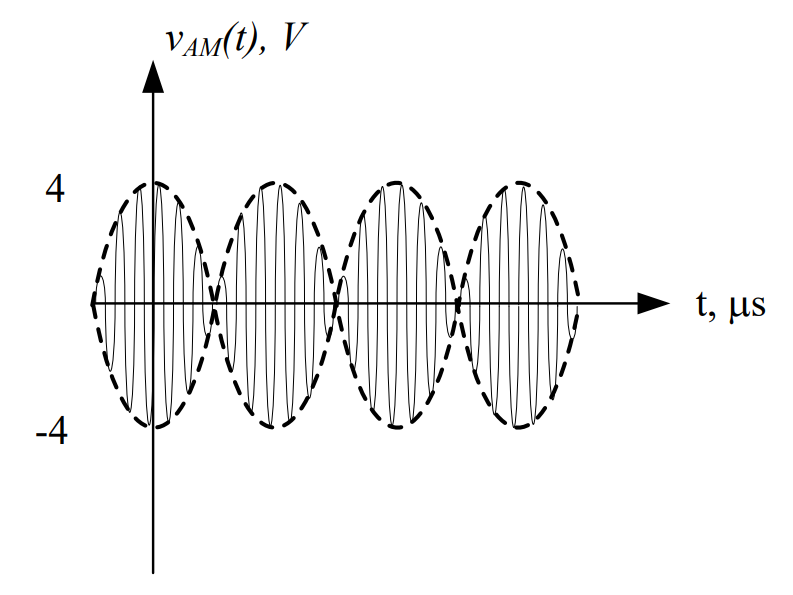 |
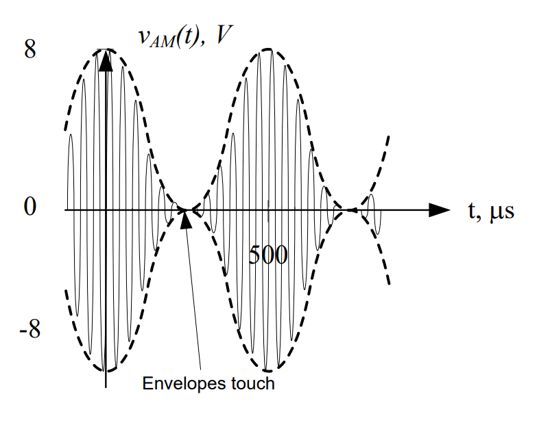 |
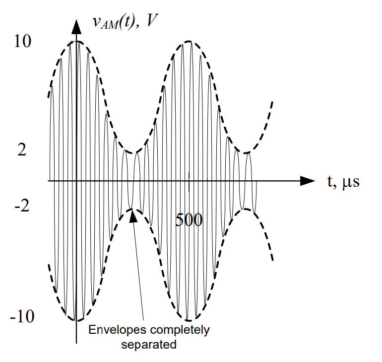 |
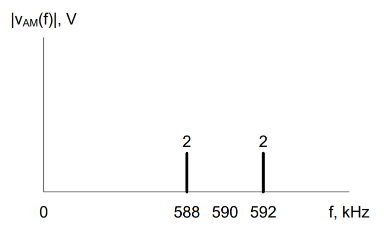 |
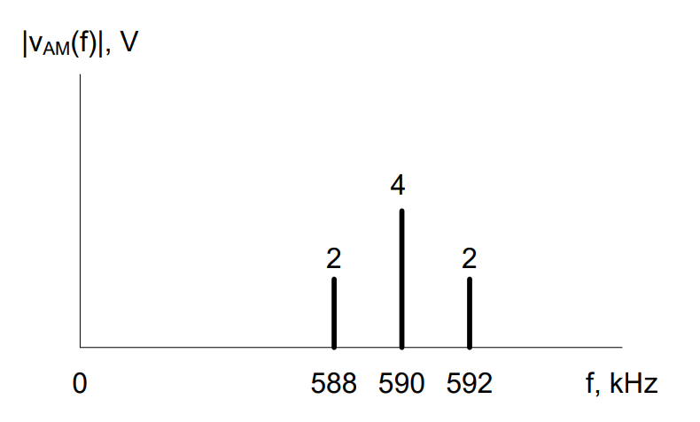 |
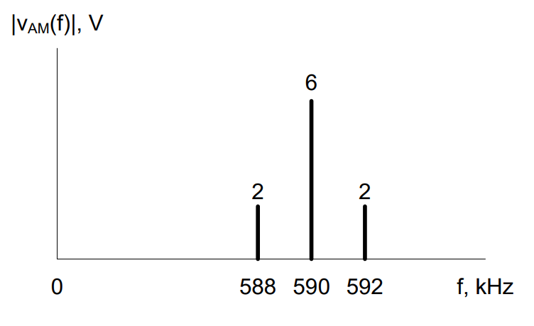 |
In order to calculate the efficiency of AM, we need to identify what part of the signal is useful power and what part is “wasted” power. As we can see above, the sidebands hold our original information (and are therefore “useful”) while the component at the carrier frequency is simply there because we pumped more power into our AM signal by adding a bias. When we speak of the efficiency of amplitude modulation, η, we are referring to the ratio of the power transmitted in the sidebands to the total power transmitted in the AM signal. Note η is always defined in terms of power, not voltage - be careful! We can calculate η directly from the known power values by:
Recall power can be calculated by squaring the RMS voltage and dividing by the resistance \(\left( P = \frac{V_{rms}^{2}}{R} \right)\). Since the RMS voltage of a sinusoid is simply its amplitude divided by \(\sqrt{2}\), its power is can be expressed as \(P = \frac{V_{m}^{2}}{2R}\). To simplify our power calculations, we often normalize resistance, which means we set R = 1Ω. If we apply this principle and use the relationship \(\alpha = \frac{A_{m}}{B}\), we can derive a simple equation for AM efficiency:
While the original equation for efficiency is valid for any type of message signal, this simplified equation is only valid for a message that consists of a single sinusoid. This type of sinusoidal “message” is called a test tone by radio engineers and is most commonly heard when the federal Emergency Alert System is tested. Since it’s still a pretty good estimate, we will use the simple equation to calculate AM efficiency in this course.
Note the efficiency of DSB-SC is always 100% (do you know why?). When the bias = 0 V, α = \(\infty.\ \) When α = \(\infty\ \), η becomes 1 or 100%. If you add a bias, you would obtain α < \(\infty.\ \) For the 100%-modulated case, α = 1. For this case, η becomes 0.33 or equivalently 33%. This means 67% of the transmitted power is wasted in the carrier frequency component! So why do most AM radio stations opt to use DSB-LC for their signals? Well, it comes down to what kind of demodulator you want to use to retrieve your message.
Demodulation - Envelope Detector#
Consider an under-modulated AM signal again. The message signal has enough bias that the signal entering the function multiplier is completely positive. This means that the resulting AM signal has completely separate envelopes, thus the original message can be easily retrieved if we can isolate the upper envelope.
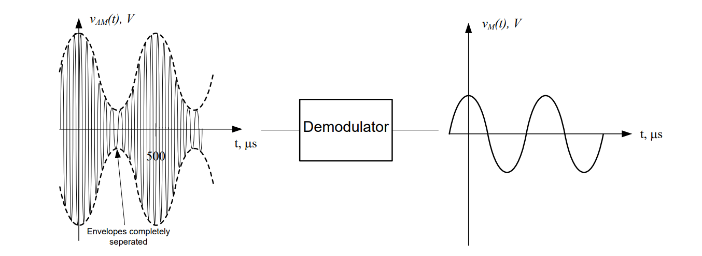
The device that accomplishes these tasks is called an envelope detector. An envelope detector consists of a diode, a low pass filter, and a high pass filter. Recall from the lesson on AC-to-DC conversion, a diode is simply an electronic component that acts as a “one-way street” for current. The diode used in an envelope detector allows just the positive part of the signal to pass through it. Therefore, as an AM signal, VAM(t), arrives at the input to the diode. The diode blocks the negative portion of the AM signal resulting in the signal, VR(t). VR(t) carries only the envelope on the positive portion of the carrier. This process is called rectification.
VR(t), which contains both high and low frequency components in its spectrum, is filtered through the low pass filter, which results in a signal that has the same shape as the positive envelope of VR(t), but contains a DC offset due to the bias of the original signal. Finally, the high pass filter is used to eliminate the component of the low pass filtered version of VR(t) which has a frequency of 0 Hz (this corresponds to the original bias, Vbias. The final result is a signal which replicates the original message signal Vm(t)). These signal processing steps are shown pictorially on the next page.
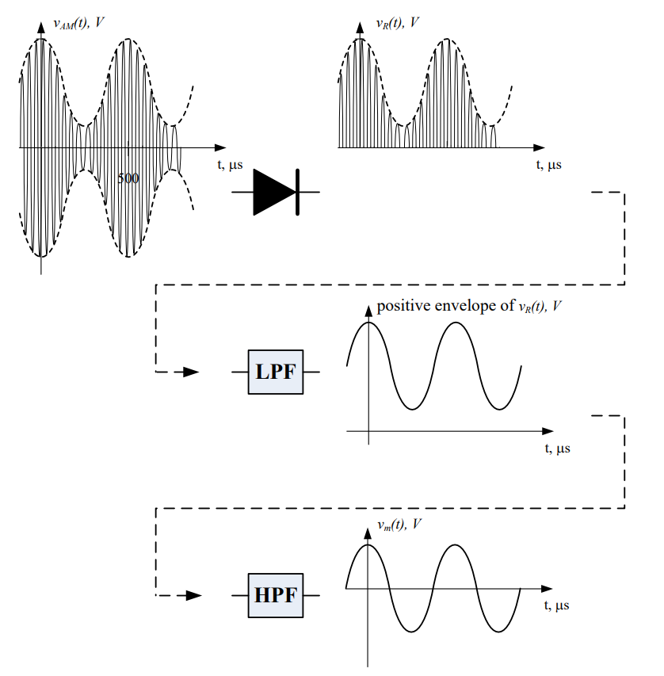
Since diodes, capacitors, and resistors are very cheap, demodulators can be inexpensive if the signal is 100%-modulated or under-modulated. In fact, during WWII, GI’s were able build the radio below (which is basically an envelope detector) from on-hand parts. We sacrifice efficiency in order to gain a cheap solution to recovering our information.
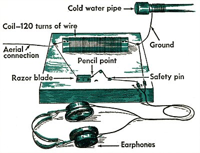
http://www.wired.com/geekdad/wp-content/uploads/2009/08/fox3.jpg
{kind=link}
Example Problem 1#
A voice message is input into an AM modulator. The output of the modulator is shown below. Design an AM demodulator to recover the message signal.
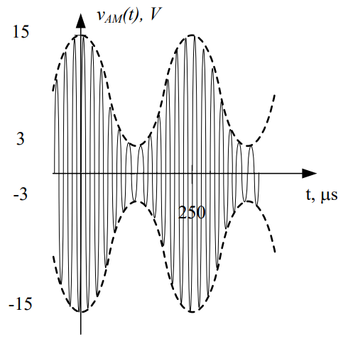
Understand: Here, we have an under-modulated signal, which means we can use an envelope detector. The message we want to recover is the upper envelope (dashed line) in the graph above. To do this, we need to remove the negative portion of the signal, the high frequency carrier signal, and the bias.
Identify Key Information:
Knowns: We know the signal is under-modulated, and we know the period of the message signal (250 µs).
Unknowns: We don’t know the frequency or period of the carrier signal.
Assumptions: None.
Plan: Since the signal is under-modulated, we can use an envelope detector. Since we know the form of an envelope detector, we only need to define the cutoff frequencies of the LPF and HPF.
Solve: Feeding the under-modulated signal into the diode results in the following waveform:
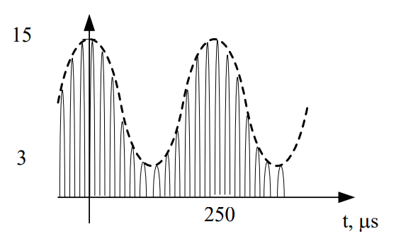
In order to remove the high frequency carrier signal, we need to pass this signal through a low pass filter, but we don’t have the cutoff frequency. In the end, we want to keep the envelope, but remove the higher frequencies. Therefore, we can set the cutoff frequency of the LPF just above that of the message envelope. The frequency of the original message was:
So as long as we choose a cutoff frequency above 4 kHz, our detector will remove the high frequency information, resulting in:
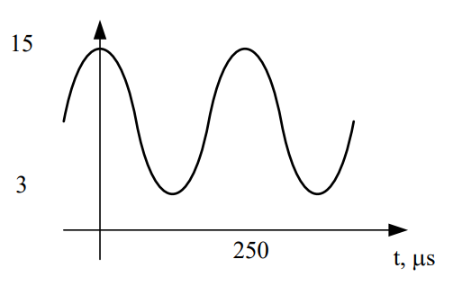
The last step is to remove the bias signal from the message. This step doesn’t require any calculations because we already know the frequency of a bias signal (0 Hz). Since it’s always 0 Hz, we simply need a high pass filter with a cutoff greater than 0 Hz; 10 Hz will suffice.
Answer: The envelope detector below will successfully retrieve our original voice message.
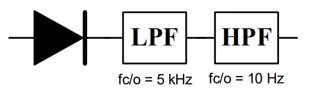
Before we move on, let’s quickly review what the three components in an envelope detector do:
Diode: Kills the negative voltages
Low pass filter: Kills the carrier
High pass filter: Kills the bias
Also, we have two important rules:
The cutoff frequency of the low pass filter will always be greater than the highest frequency in the message.
The cutoff frequency of the high pass filter will always be slightly greater than 0 Hz.
And the most important concept of all - envelope detectors DO NOT work for over-modulated signals, or DSB-SC modulation. They simply trace the upper envelope, and as you can see by the example below, they definitely give you the wrong message back.
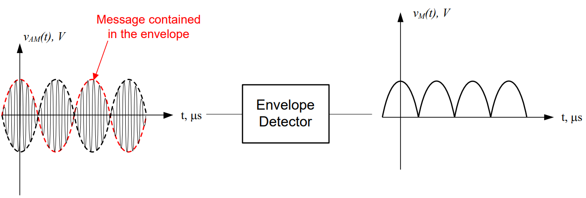
Demodulation – Synchronous Detector#
If we have an over-modulated signal, then we have to use a more complicated demodulator. Demodulation is still fairly straightforward, but requires more than simple circuit components. Synchronous demodulation is the opposite of modulation – the incoming signal is mixed (using a function multiplier) with the original carrier frequency, and the output is run through a series of filters.
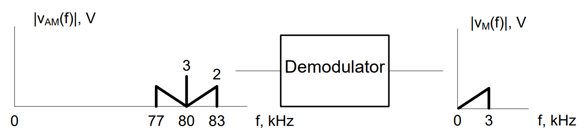
Figure 1: Block diagram for a demodulator.
The block diagram of a synchronous demodulator, which works for all modulated signals, is:
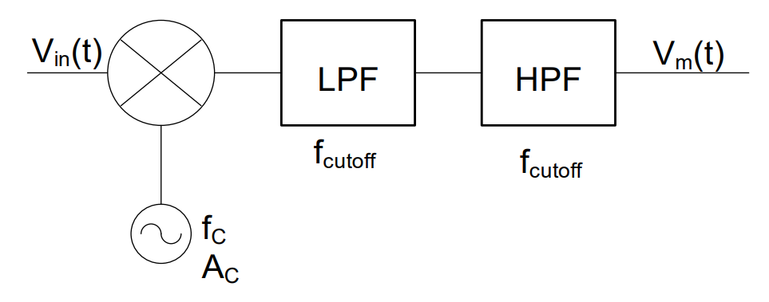
Figure 2: Block diagram for a synchronous detector.
Consider the modulated signal shown in Figure 1. First, we need to shift the 80 kHz modulated signal back down to baseband (0 Hz) and then we need to eliminate the bias term. This is the crucial point to designing a synchronous detector – determining what signal to multiply the AM signal by, which allows recovery of the message. We will again use the properties of the function multiplier.
Let’s start by looking at the AM signal itself:
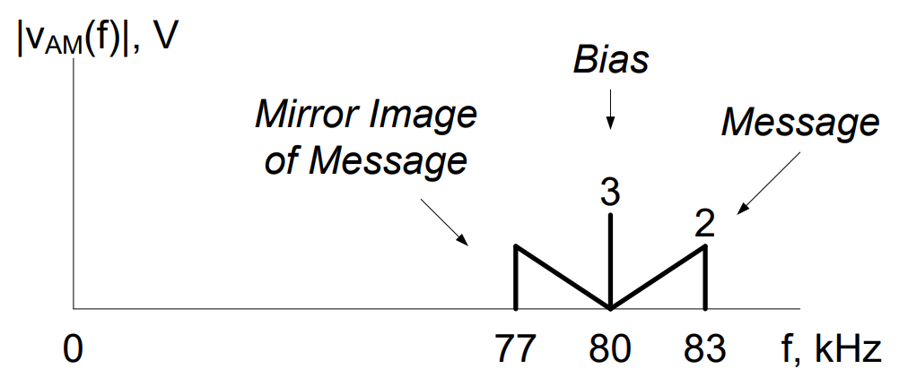
As shown in the above graph, the signal is a combination of a message signal, a bias spike, and a mirror image of the message signal.
In an AM signal, a center spike (if present) will always be located at the carrier frequency. Therefore, we can easily tell from this graph that the carrier signal was 80 kHz. We can also tell the original message was located from 0 to 3 kHz. We can shift the signal using a function multiplier with a frequency of 80 kHz and an amplitude, Ac = 2V. This results in two key actions:
The signal will be shifted up by 80 kHz (the sum of the demodulating frequency and the original frequency). Instead of being centered at 80 kHz, it is now centered at 160 kHz (80 kHz + 80 kHz).
The signal will also be shifted down by 80 kHz (the difference of the demodulating frequency and the original frequency).
Note: the amplitudes stay the same since we are conveniently using a carrier frequency with an amplitude of 2V.
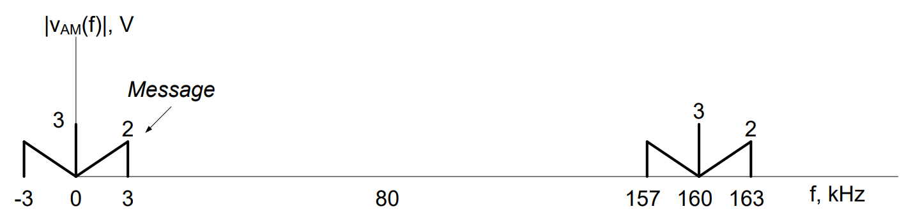
Notice that the message signal, represented by a triangle, is exactly where we want it to be.
However, we see there are “negative frequencies here” and, as we know, negative frequencies don’t exist. Without going into the mathematical details, the portion of the signal that is shown between 0 and -3 kHz is added to the message between 0 and 3 kHz. This effectively doubles the amplitude of the other portion of the shifted signal:
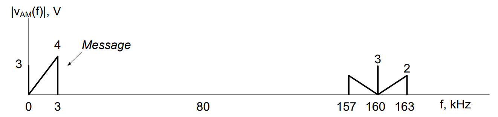
Notice we still have a bias signal and a higher frequency component to remove. Therefore, after passing through the function multiplier, we send the signal through a low pass filter. Just as we did with the envelope detector, we set the cutoff frequency of the low pass filter to be greater than the highest frequency in the message signal (which, for this case, is 3 kHz). For this example, we choose fc/o = 4 kHz. This results in:
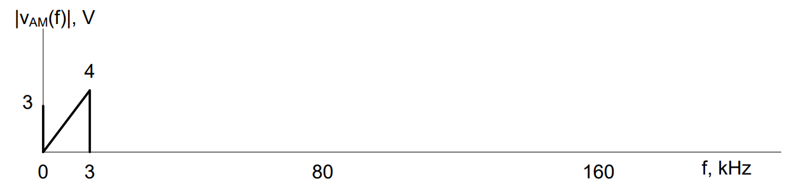
Now all that remains is to remove the bias. Just as with the envelope detector, the bias can be removed by passing the signal through a high pass filter with fc/o > 0 Hz. In this case, we’ll use 10 Hz again. This returns us to our original message signal (although the amplitude is slightly different).
The final form of the synchronous detector is:
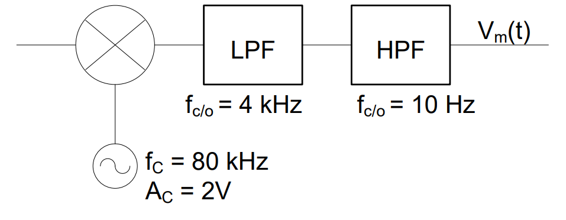
In summary, the three components in a synchronous detector:
Function multiplier: Moves the AM signal back down to baseband frequencies
Low pass filter: Removes the high frequency image added by the function multiplier
High pass filter: Removes the bias
The design rules for these components are:
The frequency of the demodulating signal, which is passed to the function multiplier should be equal to the carrier frequency of the original modulated signal
The cutoff frequency of the low pass filter will always greater than or equal to the highest frequency in the message
The cutoff frequency of the high pass filter will always be slightly greater than 0 Hz (nominally 10 Hz)